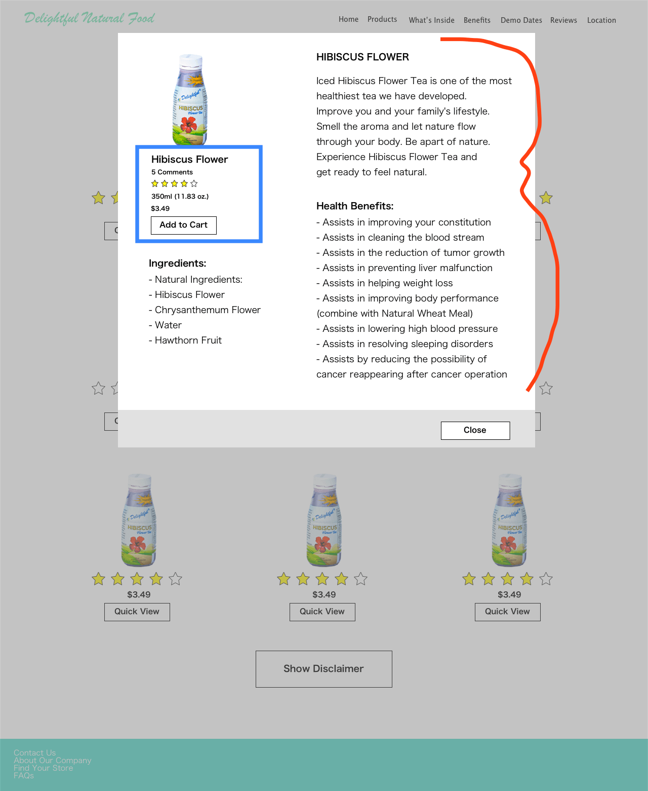

Delightful Natural Food

My goal was to create a website for Delightful Natural Food, but information was limited to what the consumers would want. I simplified the user experience by providing certain features, such as store location of knowing where to purchase the products and adding a chatbot.
Company: Joe & Bobby Inc. sells healthy beverages and food to consumers via website or in certain stores. They often go to stores in the bay area and central valley to demo some of their iced beverages for people to try, so there is a lot of information that was needed to add to their website for consumers to get the full experience.
The Problem: Consumers did not know where to find important information regarding location to purchase teas, benefits, etc. to help create a better user experience.
- Diving in deeper:
- when users go to the website, they had no details of product information and locations of where to purchase the products
- large images taking too long to load
- UX/UI Developer
- Sketch
- Marvel
- Xtensio
- Balsamiq Mockups 3
- Zeplin
- Pen & Paper
- Brackets
- HTML
- CSS
- Javascript
Findings
- Research -
I went to their iced beverage demos to figure out the target audience. I had the opportunity to talk to consumers and see who were interested in the iced beverages. I noticed the majority of the consumers that would try the iced beverages were mostly aged 21 and older with a minority of kids around the age of 7.
Aside from going to demos, my next approach was to check how the users were navigating around the website using a tool called Samestate, which allowed me to see what the consumers are doing on the website.
*Samestate is no longer active*
-
User 1's Interaction Video
In the video, it appears that the user clicked on the product name, thinking it would lead to the product, but the name was not clickable.
-
User 2's Interaction Video
In the video, it appears that Twitter Bootstrap was not displaying correctly, creating a non-friendly and unattractive interface, thus allowing the user to quickly exit the website.
-
User 3's Interaction Video
In the video, it appears that the user is skimming through the homepage and clicking through tabs.
After the user's interaction, I used a browser testing online tool that checks whether the browsers are showing up properly with the associated operating system. User 2 (as listed below) was using a Chrome Browser with Windows OS. It also appears that browser Dillo and Ubuntu OS wasn't showing up properly on the website either. One way to solve this problem was to ensure the HTML & CSS code was clearly written.


After compiling my research, I was able to create two personas to provide me a personality and a profile to work with. My target audience was from the bay area aged 21 and older. When creating my personas, I chose an elderly woman and a young man because there were more middle-aged to an elderly woman when compared to men; I chose a young man because there were more younger men than women when sampling the beverages. After creating the personas, I created user flows to help me understand the process it takes to complete a task. I then created Red Routes to help me prioritize which is more important on any usability of key user journeys.


I audited some features from competitor websites, which resulted in Delightful Natural Food website needing better organization of content among with other features. Based on own research from Delightful consumers and competitors, I have prioritized the needs:
-
Priorities & Goals:
- Where to purchase beverages in stores
- Hirarchy of content
- Image sizes
- Adding Chatbot
- Frequently Asked Questions


I organized the structure and prioritized the most important features in the beginning, as well as eliminating extras we didn't need.

The above image has been adjusted to where it now contains location of where to purchase the beverages in stores, adding health benefits of why the beverages are good for consumers, compressing the images to where it would not take a long time to load, and adding a chatbot.

Before: The two images on the left: "Add to Cart" button at the bottom of the modal giving users unnecessary tasks of scrolling down just to purchase.
After: The rearrangement of the "Add to Cart" button shown in blue outline box. (The red mark shows the information has been truncated down versus before.)
Click here to try it yourself.
Key Learnings
Delightful Natural Food had an increase in website traffic, consumers interacting with the chatbot, and easily allowing access to the FAQs on the website.
Prioritizing goals. I shifted some of the ideas, such as ratings and search features due to time and implementation.